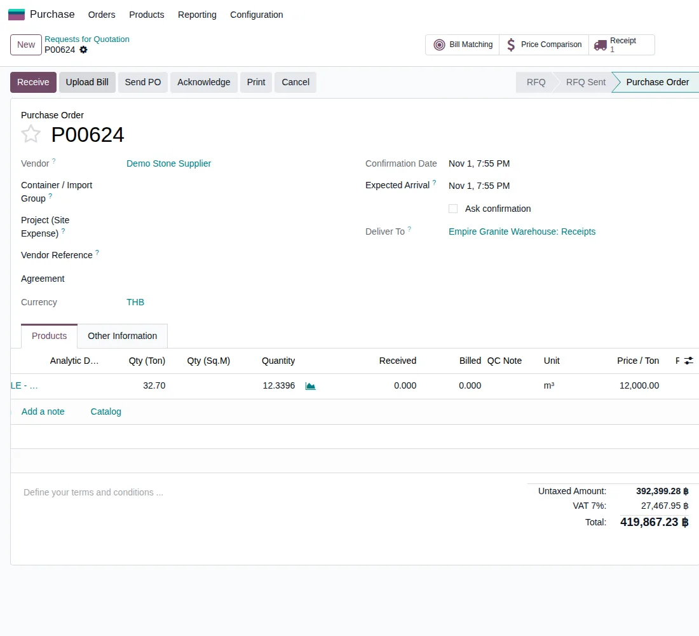
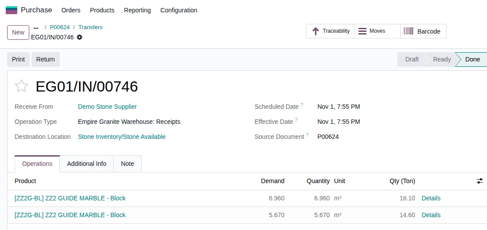
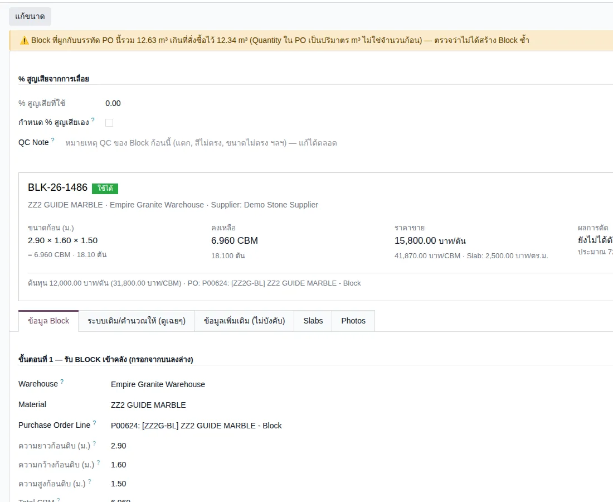
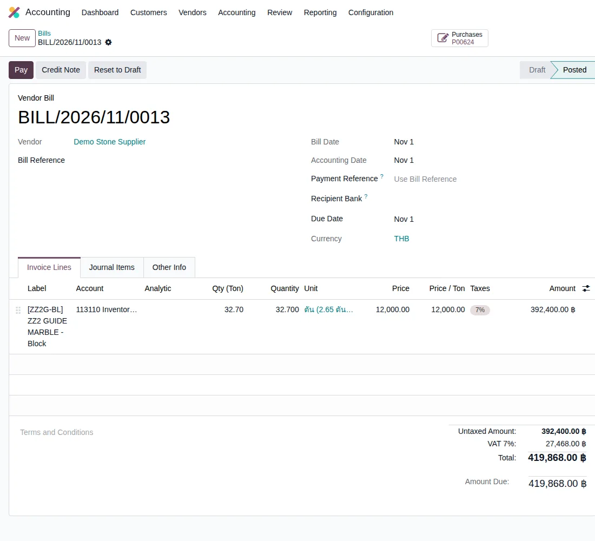
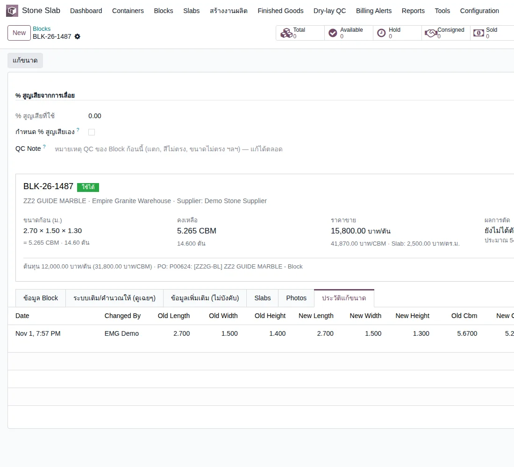
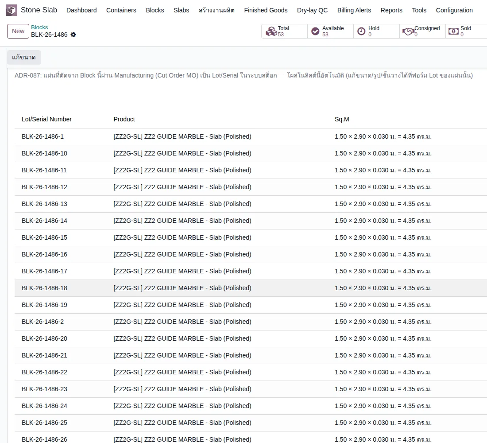

Empire Stone × Empire Granite — QA
Golden Path — Block: สั่งซื้อ รับของ ต้นทุน ใบแจ้งหนี้ แก้ขนาด และตัดเป็น Slab
อัปเดตล่าสุด: 1 พฤศจิกายน 2569 (2026-11-01) · รันจริงบน eg-tst ผ่านหน้าจอ ใช้ผู้ใช้ emgdemo บริษัท Empire Granite
เอกสารเดียวสำหรับเรื่อง Block: สั่งซื้อและรับของ · ดูต้นทุนในหน้า Block · ใบแจ้งหนี้ผู้ขาย · แก้ขนาดที่วัดผิด · ตัดเป็น Slab ทุกเคสเขียนให้ผู้ใช้ไม่เทคนิคทำตามได้ ไม่รวมเคสกรอกผิดหรือดักข้อผิดพลาด ข้อมูลตัวอย่างขึ้นต้นด้วย ZZ
6Test Case ทั้งหมด
3หมวด
6High Priority
0Medium Priority
0Low Priority
เอกสารนี้เป็นฉบับแรกของเรื่อง Block ในรูปแบบใหม่
- ทำตามทีละขั้นด้วยคู่มือ คู่มือกดตาม Block (มีเหตุผลของแต่ละค่าที่กรอก) · เอกสารนี้ใช้ตรวจผล
- ต้องทำ คู่มือกดตาม Setup ระบบ ตอน 2 มาก่อน เพื่อให้มีสินค้า Block และ Slab ตัวอย่าง
- ขอบเขต 6 เคส: รับ Block เข้าคลัง 3 เคส · ใบแจ้งหนี้และแก้ขนาด 2 เคส · ตัดเป็น Slab 1 เคส
- Golden Path เดิมของ Block (ซื้อ Block ถึงตัด, Block ถึง Slab ถึง FG) ไม่ได้แก้ ยังใช้ได้ตามเดิม
A. รับ Block เข้าคลัง
สั่งซื้อ Block เป็นตัน · รับของและกรอกขนาด · ดูต้นทุนในหน้า Block · 3 test cases
| TC ID | Scenario | Precondition | Steps | ข้อมูลตัวอย่าง | Expected Result | Priority | ภาพหน้าจอ |
|---|---|---|---|---|---|---|---|
| TC-GP-BLK-01 | สั่งซื้อ Block เป็นตัน และยืนยันใบสั่งซื้อ Block ซื้อเป็นตัน ระบบแปลงเป็นลูกบาศก์เมตรให้เอง (÷ 2.65) · ช่อง Container / Import Group ที่หัวใบสั่งซื้อไม่ต้องกรอกสำหรับ Block |
เข้าระบบเป็น Empire Granite · ทำคู่มือ Setup ระบบตอน 2 แล้ว มีสินค้า ZZ2 GUIDE MARBLE - Block · มีผู้ขาย Demo Stone Supplier |
|
Vendor = Demo Stone Supplier · ZZ2 GUIDE MARBLE - Block · Qty (Ton) = 32.70 · Price / Ton = 12,000 | Quantity 12.3396 m³ · Unit Price 31,800.00 · ก่อน VAT 392,399.28 · สถานะเป็น Purchase Order (เช่น P00624) · มีปุ่มสมาร์ท Receive | High |  |
| TC-GP-BLK-02 | รับของ กรอกขนาด Block 2 ก้อน แล้ว Validate ให้ระบบสร้าง Block ไม่ต้องสร้าง Block เองก่อนรับของ ไม่เช่นนั้นจะซ้ำ · กด Tab ที่ช่องสุดท้ายของ Details อาจเปิดแถวว่างเพิ่ม ระบบข้ามแถวว่างเอง · คอลัมน์ Qty (Ton) ในใบรับของแสดงตันตามใบส่งของที่กรอก (ไม่กรอก = ปริมาตร × 2.65) และขึ้นแถบเตือนถ้าต่างจากปริมาตร × 2.65 เกิน 3% |
ทำ TC-GP-BLK-01 เสร็จแล้ว |
|
ก้อนที่ 1 = 2.90 × 1.60 × 1.50 ม. 18.100 ตัน · ก้อนที่ 2 = 2.70 × 1.50 × 1.40 ม. 14.600 ตัน | ปริมาตรต่อแถว 6.96 และ 5.67 ลบ.ม. (รวม 12.63) · ใบรับของเป็น Done (เช่น EG01/IN/00746) · Qty (Ton) ในใบรับของ 18.10 และ 14.60 (ตรงกับตันตามใบส่งของ) · ได้ Block 2 ก้อน (เช่น BLK-26-1486 และ BLK-26-1487) | High |  |
| TC-GP-BLK-03 | ตรวจต้นทุน ขนาด และแถบเตือนในหน้า Block แถบเตือนสีเหลืองเกิดเพราะปริมาตรที่วัดจริงรวม (12.63) เกินปริมาตรที่แปลงจากตันที่สั่ง (12.34) ถ้าเกิดจากการวัดจริง ไม่ต้องทำอะไร · ตัวกรองเริ่มต้นของหน้า Blocks ซ่อน Block ที่ใช้หมดแล้ว |
ทำ TC-GP-BLK-02 เสร็จแล้ว |
|
Block BLK-26-1486 | ขนาด 2.90 × 1.60 × 1.50 ม. = 6.96 CBM · 18.10 ตัน · คงเหลือ 6.96 CBM · ต้นทุน 12,000 บาท/ตัน (31,800 บาท/CBM) · PO ต้นทาง P00624 · แถบเตือน "Block ที่ผูกกับบรรทัด PO นี้รวม 12.63 m³ เกินที่สั่งซื้อไว้ 12.34 m³ ..." · Purchase Order Line = P00624 · ตัวนับ Slab (Total/Available/Hold/Consigned/Sold) = 0 | High |  |
B. ใบแจ้งหนี้และแก้ขนาด
ใบแจ้งหนี้ผู้ขายดึงจากใบสั่งซื้อ · แก้ขนาด Block ที่วัดผิด · 2 test cases
| TC ID | Scenario | Precondition | Steps | ข้อมูลตัวอย่าง | Expected Result | Priority | ภาพหน้าจอ |
|---|---|---|---|---|---|---|---|
| TC-GP-BLK-04 | สร้างใบแจ้งหนี้ผู้ขายจากใบสั่งซื้อ Block บิลเขียนเป็นตัน ราคาบาทต่อตัน ยอดจึงเท่ากับตันที่รับ × ราคาต่อตัน เสมอ · Bill Date เป็นช่องบังคับ |
ทำ TC-GP-BLK-02 เสร็จแล้ว |
|
Vendor = Demo Stone Supplier · Auto-Complete = P00624 · Bill Date = วันนี้ | บรรทัดเดียว: Quantity 32.700 ตัน · Price 12,000.00 · ก่อน VAT 392,400.00 (= 18.10 + 14.60 ตัน × 12,000) · VAT 7% 27,468.00 · รวม 419,868.00 · สถานะ Posted (เช่น BILL/2026/11/0013) | High |  |
| TC-GP-BLK-05 | แก้ขนาด Block ที่วัดผิด และตรวจประวัติ ปุ่ม แก้ขนาด ใช้ได้เฉพาะผู้มีสิทธิ์ Inventory Administrator · ต้องระบุเหตุผล · น้ำหนัก (ตัน) และต้นทุนต่อ CBM ไม่เปลี่ยนตามขนาด · ไม่แก้ใบแจ้งหนี้ที่ Post แล้ว · ระบบหักสต็อกส่วนต่าง 0.405 ลบ.ม. มูลค่า 12,514.29 บาท ซึ่งตรวจจากฐานข้อมูล ไม่แสดงบนหน้าจอ |
ทำ TC-GP-BLK-02 เสร็จแล้ว · เป็นผู้ใช้ที่มีสิทธิ์ Inventory Administrator |
|
Block BLK-26-1487 · สูงใหม่ = 1.30 · เหตุผล = วัดความสูงผิดตอนรับของ วัดซ้ำได้ 1.30 ม. | ในหน้าต่าง ปริมาตรใหม่ = 5.265 และ ใช้ไปแล้ว = 0.00 · หลังแก้ การ์ดแสดง 2.70 × 1.50 × 1.30 = 5.265 CBM · 14.60 ตัน · ต้นทุน 12,000 บาท/ตัน (31,800 บาท/CBM) คงเดิม · แท็บ ประวัติแก้ขนาด 1 แถว: ความสูงเก่า 1.400 ใหม่ 1.300 · ปริมาตร 5.6700 → 5.2650 ผลต่าง -0.405 · เหตุผลตามที่พิมพ์ | High |  |
C. ตัด Block เป็น Slab
ใบสั่งตัดจาก สร้างงานผลิต · ได้ Slab 1 Lot ต่อแผ่น · 1 test case
| TC ID | Scenario | Precondition | Steps | ข้อมูลตัวอย่าง | Expected Result | Priority | ภาพหน้าจอ |
|---|---|---|---|---|---|---|---|
| TC-GP-BLK-06 | ตัด Block เป็น Slab ด้วยใบสั่งตัด (ไม่มีใบขาย) ต้องกด สร้างแผนใหม่ หลังเปลี่ยนความหนา ไม่เช่นนั้นแผนยังเป็น 80 แผ่นหนา 2 ซม. · แผ่นละ 0.1305 ลบ.ม. × 53 = 6.917 ลบ.ม. เหลือเศษ 0.043 · ตรวจจากฐานข้อมูล: ต้นทุนของ Block ที่ใช้ไป 215,858.10 บาท ถูกยกไปเป็นต้นทุน Slab 53 แผ่นรวม 215,858.10 บาท |
ทำ TC-GP-BLK-02 เสร็จแล้ว · มีสินค้า ZZ2 GUIDE MARBLE - Slab |
|
Block BLK-26-1486 · ผิว Polished · ความหนา = 3 cm · เหตุผล = อื่นๆ (Other) · ขนาดแผ่น 2.90 × 1.50 ม. (ค่าเริ่มต้น) | ก่อนสร้างแผนใหม่: ประมาณ 80 แผ่น 348.00 ตร.ม. · หลัง: 53 แผ่น 230.55 ตร.ม. · ย้ายสำเร็จ (6.960 หน่วย ไป Stone Production) · ตาราง 53 แถว แผน=จริง 2.90 × 1.50 × 0.03 · "Complete Cut สำเร็จ ... ตัดได้ 53 แผ่นจาก BLK-26-1486" · สถานะ Done · ตัดได้จริง 53 แผ่น 230.55 ตร.ม. (100% ของแผน) · Block เหลือ 0.043 CBM ป้าย ใช้ได้ · Slabs Total 53 / Available 53 · BLK-26-1486-1 ถึง -53 ขนาด 2.90 × 1.50 × 0.030 ม. = 4.35 ตร.ม. | High |  |